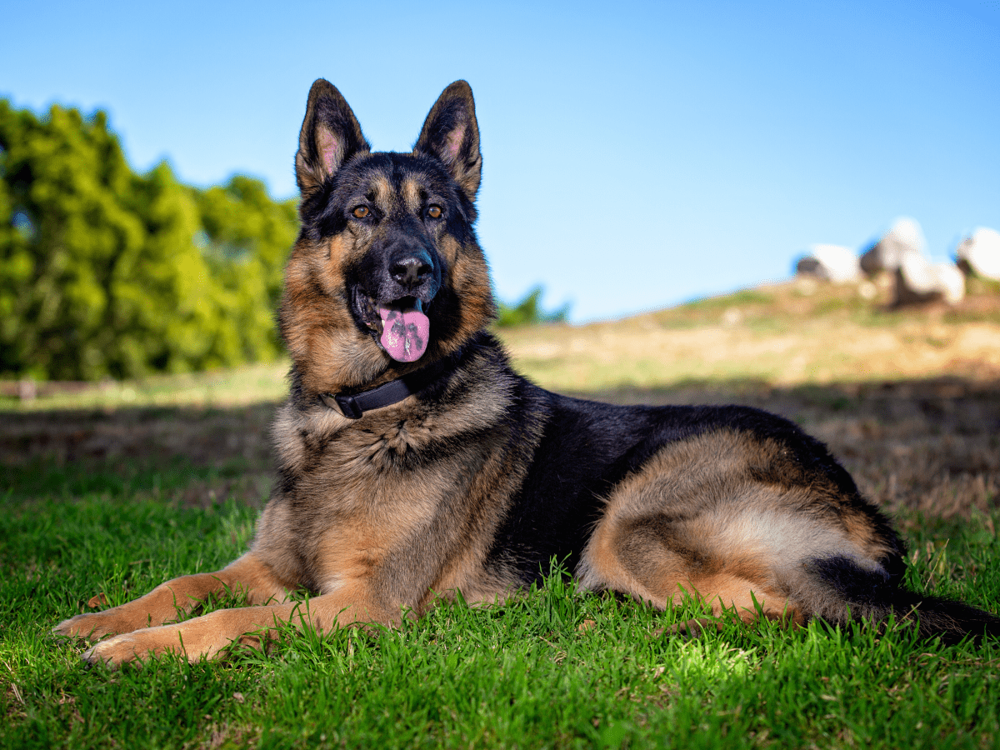

About
Dog, domestic mammal of the family Canidae, subspecies of the gray wolf, related to foxes and jackals. The dog is one of the two most popular domestic animals in the world (the cat is the other). For more than 12,000 years it has lived with humans as a hunting companion, protector, object of scorn or adoration, and friend.
Dogs are regarded differently in different parts of the world. Characteristics of loyalty, friendship, protectiveness, and affection have earned dogs an important position in Western society. Western civilization has given the relationship between human and dog great importance, but, in some of the developing nations and in many areas of Asia, dogs are not held in the same esteem. In some areas of the world, dogs are used as guards or beasts of burden or even for food, whereas in the United States and Europe dogs are protected and admired. In ancient Egypt during the days of the pharaohs, dogs were considered to be sacred.
Most popular dog breeds (2023)
-
French Bulldog
The Frenchie is playful, alert, adaptable, and completely irresistible. The French Bulldog resembles a Bulldog in miniature, except for the large 'bat ears' that are the breed's trademark feature.
-

Labrador Retriever
Labs are friendly, outgoing, and high-spirited companions who have more than enough affection to go around for a family looking for a medium-to-large dog.
-

Golden Retriever
Goldens are outgoing, trustworthy, and eager-to-please family dogs, and relatively easy to train. They take a joyous and playful approach to life and maintain this puppyish behavior into adulthood. These energetic, powerful gundogs enjoy outdoor play.
-

German shepherd
Generally considered dogkind's finest all-purpose worker, the German Shepherd Dog is a large, agile, muscular dog of noble character and high intelligence. Loyal, confident, courageous, and steady, the German Shepherd is truly a dog lover's delight.
-

Poodle
Poodles are notorious for their intelligence and ease of training. They are lively, active, fun-loving dogs with a sense of the ridiculous. Poodles thrive on attention and can develop bad habits such as nuisance barking if ignored or left alone.
Amazing dog facts
A dog’s nose print is unique, much like a person’s fingerprint.
Dogs’ noses can sense heat and thermal radiation, which explains why blind or deaf dogs can still hunt.
Dalmatians are born completely white. They develop their spots as they get older.
A study shows that dogs are among a small group of animals who show voluntary unselfish kindness towards others without any reward.
The Bloodhound’s sense of smell is so accurate that the results of its tracking can be used as evidence in a court of law.
Get in touch!
Are you a dog owner looking for a playdate for your furry buddy? Look no further!
Send us an email at doglovers.playdates@gmail.com.